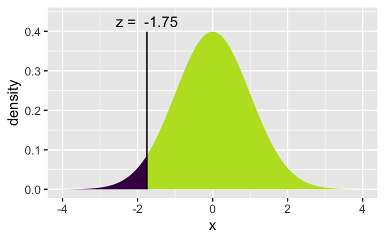

library(tidyverse) # ggplot lives in the tidyverse
library(mosaic) # where xqnorm and xpnorm live
library(infer) # for a function we are only using todayLab 5 - Math 58B: One Proportion CIs w Normality
Using the normal distribution, confidence intervals for any confidence level will be created! And we’ll keep trying to understand what “confidence” means.
Advice for turning in the assignment
knit early and often. In fact, go ahead and knit your .Rmd file right now. Maybe set a timer so that you knit every 5 minutes. Do not wait until you are done with the assignment to knit.
The assignment part of the lab is ONLY the last six questions at the very bottom. However, the commands in the first half of the assignment are key to doing the second half.
Save the .Rmd file somewhere you can find it. Don’t keep everything in your downloads folder. Maybe make a folder called
StatsHWor something. That folder could live on your Desktop. Or maybe in your Dropbox.
Getting started
The mosaic package provides great functions for calculating normal probabilities and normal cutoffs: xpnorm() and xqnorm() respectively.
Lab Goals
Computing a confidence interval for a single proportion
- wait, what is a confidence interval?
- using
xqnorm()(find the number on the x-axis!) [Note: feel free to useplot=FALSEif you understand what is going on and don’t want the visual representation.] - practice with
ggplot()
Load packages
In lab #5 we will use the xpnorm() and xqnorm() functions which are in the mosaic package.
Let’s load the packages.
The data
Consider the research study done in 2017 describing the support of marijuana legalization in Washington State.1
From the abstract of the paper:
Data come from geographically representative general population samples of adult (aged 18 and over) Washington residents collected over five timepoints (every six months) between January 2014 and April 2016 (N=4101). Random Digit Dial was used for recruitment. Statistical analyses involved bivariate comparisons of proportions across timepoints and subgroups (defined by age, gender, and marijuana user status), and multivariable logistic regression controlling for timepoint (time) to formally test for trend while controlling for demographic and substance use covariates. All analyses adjusted for probability of selection.
The results are given as:
Support for legalization in Washington has significantly increased: support was 64.0% (95% CI: 61.2%-67.8%) at timepoint 1 and 77.9% (95% CI: 73.2%-81.9%) at timepoint 5. With each six months’ passing, support increased 19% on average. We found no statistically significant change in support for home-growing.
For lab #5, we’re going to pretend to have a population. Here, it is the population of Washington State in 2016 (about 7 million people), 75% of whom think that marijuana should be legalized. (I made up those numbers, but they seem reasonable!)
legal <- data.frame(support = c(rep("yes", 5250000), rep("no", 1750000)))Step 1. Take a random sample.
Let’s start with a random sample of 50 people. How many of them support legalization? Is it the same proportion as your neighbor?
samp_n <- 50
legal_samp <- sample_n(legal, samp_n)
table(legal_samp)support
no yes
11 39 Step 2. Find the Z value associated with 92%
Find the quantile associated with 92% of the statistics (here \(\hat{p}\)) in the sampling distribution. That is, how many SDs from the mean will 92% of \(\hat{p}\) statistics be? It might be best to run each line one at a time.
xqnorm(0.92, 0, 1)[1] 1.405072xqnorm(0.96, 0, 1)[1] 1.750686xqnorm(0.04, 0, 1)
[1] -1.750686Let’s check to find the probabilities associated with each of the quantile cutoffs. Which one is the correct one to use for the 92% CI? Again, try running the lines one at a time.
xpnorm(1.405, 0, 1)[1] 0.9199894xpnorm(c(-1.405, 1.405), 0, 1)[1] 0.08001064 0.91998936xpnorm(1.751, 0, 1)[1] 0.960027xpnorm(c(-1.751, 1.751), 0, 1)[1] 0.03997296 0.96002704Note that there are two “x” functions:
- The first function has a “q” in it for “quantile” (
xqnorm()). The quantile provides a cutoff value for a particular percentage. The median is the 50%. You may also be familiar with the quantile associated with the 90% on the SAT. - The second function has a “p” in it for “probability” (
xpnorm()). The probability function provides the appropriate percentages of the distribution at the given quantiles.
margin of error is the quantile times the standard error:
\[me = Z^* \cdot \sqrt{\frac{\hat{p}(1-\hat{p})}{n}}\]
Step 3. Create a CI
Using the following formula & your sample of 50 people, find a 92% CI for the true proportion of people who support legalizing marijuana use. Feel free to use R as a calculator.
\[\hat{p} \pm 1.751*\sqrt{\frac{\hat{p}(1-\hat{p})}{n}}\]
Note a few things… 1.751 is used instead of 2 for Z* (because we wanted a 92% interval instead of a 95% interval). And \(\hat{p}\) was used instead of p in the SE (because we don’t usually know \(p\) and we use the closest thing we have, \(\hat{p}\)).
Does your CI capture the true value of p (which we know / we set to be 0.75)? Does your neighbor’s CI capture the true value of p?
Step 4. Create a tidy CI
Now use the following “tidy” formula to calculate the CI one more time. Did you get the same interval as in #2?
(z_star_92 <- xqnorm(0.96, 0, 1))
[1] 1.750686legal_samp %>%
summarize(p_hat = sum(support == "yes") / samp_n,
se = sqrt(p_hat*(1-p_hat)/samp_n), # se stands for "standard error"
me = z_star_92 * se, # me stands for "margin of error"
lower = p_hat - me, # lower is for the lower bound of the CI
upper = p_hat + me) # upper is for the upper bound of the CI p_hat se me lower upper
1 0.78 0.05858327 0.1025609 0.6774391 0.8825609Step 5. Force reproducibility
If you have run your code a few different times, you may have gotten different samples of size 50. If you want to get the same exact sample (e.g., so that you can write about your results), set your randomness by using set.seed() before you sample, where the argument to the set.seed() function is your favorite integer. Try it and see if you can get the same repeated results.
Step 6. Create 100 CIs
Because each student took a different random sample, we’d expect 92% of the classroom intervals to capture the true parameter value.
Using R, we’re going to collect many samples to learn more about how sample means and confidence intervals vary from one sample to another.
Here is the rough outline:
- Obtain a random sample.
- Calculate the sample proportion and use it to calculate and store the lower and upper bounds of the confidence intervals.
- Repeat 100 times.
We can get many CIs using the rep_sample_n() function. The following lines of code take 100 random samples of size samp_n from the population (and remember samp_n \(= 50\) as defined earlier) and computes the upper and lower bounds of the confidence intervals separately for each of the 100 samples.
Note: you don’t need to memorize the code, but you should understand what it is doing.
set.seed(47)
ci <- legal %>%
infer::rep_sample_n(size = samp_n, reps = 100, replace = FALSE) %>%
summarize(p_hat = sum(support == "yes") / samp_n,
se = sqrt(p_hat*(1-p_hat)/samp_n), # se stands for "standard error"
me = z_star_92 * se, # me stands for "margin of error"
lower = p_hat - me, # lower is for the lower bound of the CI
upper = p_hat + me) # upper is for the upper bound of the CILet’s view the first five intervals:
ci %>%
head(5)# A tibble: 5 × 6
replicate p_hat se me lower upper
<int> <dbl> <dbl> <dbl> <dbl> <dbl>
1 1 0.8 0.0566 0.0990 0.701 0.899
2 2 0.72 0.0635 0.111 0.609 0.831
3 3 0.76 0.0604 0.106 0.654 0.866
4 4 0.76 0.0604 0.106 0.654 0.866
5 5 0.7 0.0648 0.113 0.587 0.813Next we’ll create a plot similar to the Confidence Interval applet and also to Figure 13.11 in Introduction to Modern Statistics. The first step will be to create a new variable in the ci data frame that indicates whether the interval does or does not capture the true population mean. Note that capturing the true parameter value would mean the lower bound of the confidence interval is below the value and upper bound of the confidence interval is above the value. Remember that new variables are created using the mutate() function.
ci <- ci %>%
mutate(capture_p = case_when(
lower < 0.75 & upper > 0.75 ~ "yes",
TRUE ~ "no"))
ci %>% select(p_hat, lower, upper, capture_p) %>% head(5)# A tibble: 5 × 4
p_hat lower upper capture_p
<dbl> <dbl> <dbl> <chr>
1 0.8 0.701 0.899 yes
2 0.72 0.609 0.831 yes
3 0.76 0.654 0.866 yes
4 0.76 0.654 0.866 yes
5 0.7 0.587 0.813 yes All that is left is to create the plot.
Note that the geom_errorbar() function only understands y values, and thus we have used the coord_flip() function to flip the coordinates of the entire plot back to the more familiar vertical orientation.
ggplot(ci, aes(x = replicate, y = p_hat, color = capture_p)) +
geom_point(size = 0.5) +
geom_errorbar(aes(ymin = lower, ymax = upper)) +
geom_hline(yintercept = 0.75, color = "darkgray") + # draw vertical line
coord_flip()You can count how many confidence intervals capture the true proportion by using the summarize function. [Aside: what is the difference between = and == in the code below?]
ci %>%
summarize(capturecount = count(capture_p == "yes"))# A tibble: 1 × 1
capturecount
<int>
1 94Review of logic
One more time with the logic of how the CI was created:
92% of the \(\hat{p}\) are within plus or minus 1.751*SE ( = margin of error) of the true \(p\). If you add / subtract the exact same amount (i.e., add and subtract the margin of error) around \(\hat{p}\) (instead of around \(p\)), then the statistics which are close enough to the true value will “capture” the true value. The 8% which are far out, will not be close enough to touch the true parameter.
Ask in class / talk to your neighbor / use the applet to make sure the logic of the CI creation makes sense to you.
To Turn In
Q1. Learning Community Q
Describe one thing you learned from someone in your learning community this week (it could be: content, logistical help, background material, R information, etc.) 1-3 sentences.
Q2. Original Study
Consider the original study on marijuana legalization. Provide one sentence (not a number) describing each of the following:
- observational unit:
- variable:
- statistic:
- parameter:
Q3.Bar plot
Create a bar plot of the first sample you took (above) from the hypothetical population that I made up. Use geom_bar().
Q4. Multiplier
Pick a confidence level of your choosing other than 92% or 95%. What is the number you will use for multiplying the SE? (What is Z*, aalled the “multiplier”?)
Q5. 100 CIs
Calculate 100 confidence intervals at the confidence level you chose in the previous question, plot all intervals on one plot, and calculate the proportion of intervals that include the true population proportion. How does the percentage compare to the confidence level selected (in the previous question) for the intervals? Make sure to include the plot in your answer.
Q6. 1000 CIs
To get a better sense of the actual coverage rate, calculate 1000 intervals (don’t try to plot 1000 intervals on one graphic). How many of your intervals captured the true population value? Was it close to the confidence level you chose?
Q7. Bigger sample
Repeat the previous two questions using \(n=610\) (as in the original study). Answer the following:
- How is the plot different across \(n=50\) and \(n=610\)?
- Does the coverage rate (how often a sample will capture the true value) depends on \(n\)? Explain.
Footnotes
MS Subbaraman and WC Kerr, “Support for marijuana legalization in the US state of Washington has continued to increase through 2016”, Drug and Alcohol Dependence, Vol 175: 205-209, 2017. https://www.ncbi.nlm.nih.gov/pubmed/28448904↩︎